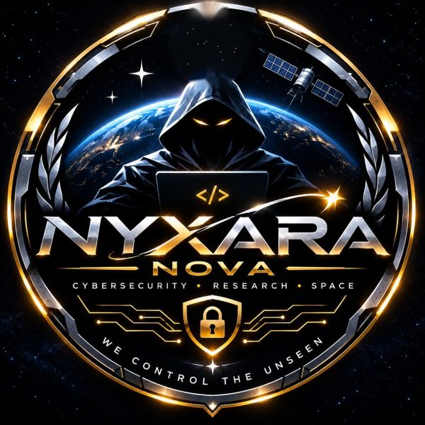
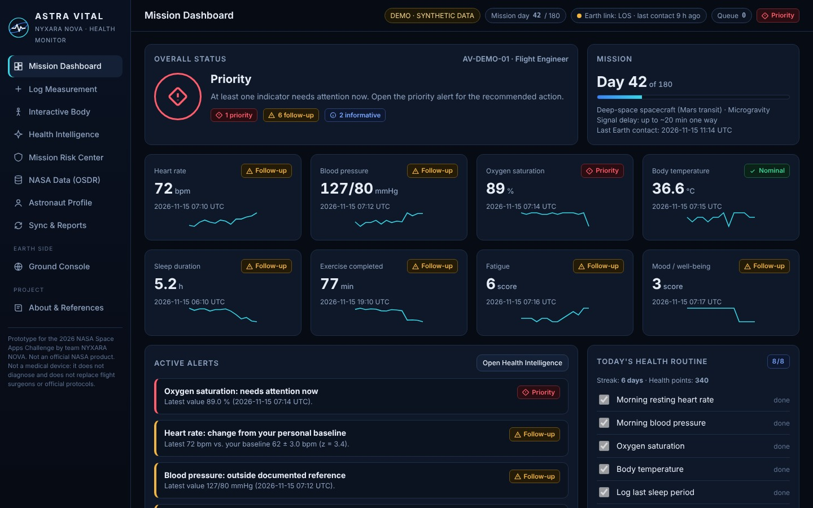
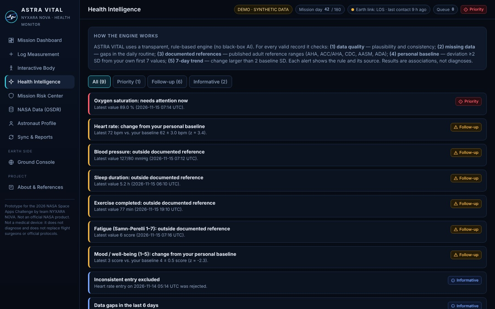

<!DOCTYPE html>
<html lang="en"><head><meta charset="utf-8"><title>ASTRA VITAL — motion scenes</title>
<!-- Original motion graphics by NYXARA NOVA. Pure HTML/SVG/CSS, no AI-generated imagery, no third-party artwork.
     Rendered frame-by-frame (deterministic) by render_scenes.py. Bottom 140 px kept clear for subtitles. -->
<style>
:root{--bg:#070B14;--bg2:#0B1220;--panel:#0F1828;--panel2:#132036;--cyan:#36D6E7;--blue:#3B82F6;--txt:#E8EEF8;--muted:#8FA3C2}
*{box-sizing:border-box}html,body{margin:0;width:1920px;height:1080px;overflow:hidden;background:var(--bg);font-family:Inter,"Segoe UI",Arial,sans-serif;color:var(--txt)}
.stage{position:absolute;inset:0;overflow:hidden;background:radial-gradient(1400px 800px at 70% 10%,#0e2546 0%,#070B14 55%,#04060c 100%)}
.abs{position:absolute}
.label{font-size:20px;letter-spacing:.32em;color:var(--cyan);font-weight:600}
.h1{font-size:76px;font-weight:750;line-height:1.08;letter-spacing:-.01em}
.h2{font-size:30px;color:#c9d6ea;line-height:1.45;font-weight:450}
.muted{color:var(--muted)}
.corner{position:absolute;right:44px;top:34px;font-size:15px;letter-spacing:.18em;color:var(--muted)}
.fadein{opacity:0;animation:fadein 1s cubic-bezier(.2,.7,.2,1) forwards}
.rise{opacity:0;transform:translateY(26px);animation:rise 1.1s cubic-bezier(.2,.7,.2,1) forwards}
.fadeout{animation:fadeout .8s ease forwards}
@keyframes fadein{to{opacity:1}} @keyframes rise{to{opacity:1;transform:none}} @keyframes fadeout{to{opacity:0}}
@keyframes drift{from{transform:translate(0,0) rotate(-6deg)}to{transform:translate(-60px,-24px) rotate(4deg)}}
@keyframes spin{from{transform:rotate(-4deg)}to{transform:rotate(4deg)}}
@keyframes twinkle{0%,100%{opacity:.25}50%{opacity:1}}
@keyframes draw{to{stroke-dashoffset:0}}
@keyframes zoomout{from{transform:scale(1.25)}to{transform:scale(1)}}
@keyframes slowzoom{from{transform:scale(1)}to{transform:scale(1.06)}}
@keyframes orbit{to{offset-distance:100%}}
@keyframes ecg{to{stroke-dashoffset:-600}}
@keyframes grow{from{transform:scaleY(.05)}to{transform:scaleY(1)}}
@keyframes slidein{from{opacity:0;transform:translateX(120px)}to{opacity:1;transform:none}}
@keyframes stationpass{from{transform:translateX(0)}to{transform:translateX(-420px)}}
.tile{background:rgba(15,24,40,.86);border:1px solid #23365a;border-radius:16px;padding:20px 22px;box-shadow:0 18px 50px rgba(0,0,0,.45)}
.tile .t{font-size:16px;letter-spacing:.14em;color:var(--muted);font-weight:600}
.tile .v{font-size:40px;font-weight:700;margin-top:6px}
.tile .v small{font-size:18px;color:var(--muted);font-weight:500;margin-left:4px}
.chip{display:inline-flex;align-items:center;gap:10px;border:1px solid;border-radius:12px;padding:10px 18px;font-size:22px;font-weight:600}
.hz{width:300px;height:330px;border-radius:18px;padding:26px;background:rgba(15,24,40,.9);border:1px solid #23365a}
.hz .L{width:64px;height:64px;border-radius:14px;display:grid;place-items:center;font-size:32px;font-weight:800;border:1px solid}
.hz h3{font-size:26px;margin:20px 0 10px}
.hz p{font-size:18px;color:#b9c7dd;line-height:1.45;margin:0}
.notice{position:absolute;left:44px;top:34px;font-size:13px;letter-spacing:.12em;color:#5f7394}
</style></head>
<body><div id="root"></div>
<script>
const SYMBOL = (size, cls='') => `<svg class="${cls}" width="${size}" height="${size}" viewBox="0 0 40 40"><circle cx="20" cy="20" r="18" fill="none" stroke="#36D6E7" stroke-width="1.5"/><ellipse cx="20" cy="20" rx="18" ry="6" fill="none" stroke="#3B82F6" stroke-width="1.2" transform="rotate(-25 20 20)"/><path d="M8 21h6l3-7 4 13 3-9 2 3h6" fill="none" stroke="#E8EEF8" stroke-width="2" stroke-linejoin="round" stroke-linecap="round"/></svg>`;
// Animated "drawing" version of the same symbol (same geometry and colors)
const SYMBOL_DRAW = (size, d0=0) => `<svg width="${size}" height="${size}" viewBox="0 0 40 40" style="overflow:visible">
  <circle cx="20" cy="20" r="18" fill="none" stroke="#36D6E7" stroke-width="1.5" stroke-dasharray="114" stroke-dashoffset="114" transform="rotate(-90 20 20)" style="animation:draw 1.1s ${d0}s cubic-bezier(.6,0,.2,1) forwards"/>
  <ellipse id="orb" cx="20" cy="20" rx="18" ry="6" fill="none" stroke="#3B82F6" stroke-width="1.2" transform="rotate(-25 20 20)" stroke-dasharray="82" stroke-dashoffset="82" style="animation:draw 1s ${d0+.45}s cubic-bezier(.6,0,.2,1) forwards"/>
  <path d="M8 21h6l3-7 4 13 3-9 2 3h6" fill="none" stroke="#E8EEF8" stroke-width="2" stroke-linejoin="round" stroke-linecap="round" stroke-dasharray="60" stroke-dashoffset="60" style="animation:draw .9s ${d0+.9}s ease-out forwards"/>
  <g transform="rotate(-25 20 20)"><circle r=".9" fill="#36D6E7" style="offset-path:path('M2 20 A18 6 0 1 0 38 20 A18 6 0 1 0 2 20');offset-distance:0%;opacity:0;animation:fadein .3s ${d0+1.3}s forwards, orbit 3.2s ${d0+1.3}s linear infinite"/></g>
</svg>`;
function rand(seed){return()=>{seed|=0;seed=seed+0x6D2B79F5|0;let t=Math.imul(seed^seed>>>15,1|seed);t=t+Math.imul(t^t>>>7,61|t)^t;return((t^t>>>14)>>>0)/4294967296}}
function stars(n=260, seed=7){const r=rand(seed);let s='';for(let i=0;i<n;i++){const x=r()*1920,y=r()*1080,z=r();s+=`<circle cx="${x.toFixed(1)}" cy="${y.toFixed(1)}" r="${(z*1.4+.3).toFixed(2)}" fill="#fff" opacity="${(.25+z*.75).toFixed(2)}" ${i%9===0?`style="animation:twinkle ${2+r()*3}s ${-r()*3}s ease-in-out infinite"`:''}/>`}return `<svg class="abs" width="1920" height="1080" style="inset:0">${s}</svg>`}
// Night-side Earth limb with city lights — original vector illustration
function earth(cy=2150, r=1400, seed=11, rot=true){const R=rand(seed);let lights='';
  const clusters=[];for(let i=0;i<46;i++)clusters.push([R()*2*Math.PI*0.32-Math.PI*0.66, R()*0.42]);
  clusters.forEach(([a,d])=>{const n=8+Math.floor(R()*26);for(let j=0;j<n;j++){const aa=a+(R()-.5)*.05, rr=r*(0.985-d*0.3-(R()*.04)); const x=960+Math.cos(aa)*rr*1.0+(R()-.5)*30, y=cy+Math.sin(aa)*rr+(R()-.5)*30; lights+=`<circle cx="${x.toFixed(1)}" cy="${y.toFixed(1)}" r="${(R()*1.8+.5).toFixed(2)}" fill="${R()>.25?'#ffd58a':'#fff3d6'}" opacity="${(.35+R()*.65).toFixed(2)}"/>`}});
  return `<svg class="abs" width="1920" height="1080" style="inset:0"><defs>
   <radialGradient id="eg" cx="50%" cy="0%" r="70%"><stop offset="0" stop-color="#1a4a8a"/><stop offset=".25" stop-color="#0c2448"/><stop offset=".7" stop-color="#050d1c"/><stop offset="1" stop-color="#02060d"/></radialGradient>
   <linearGradient id="term" x1="0" x2="1"><stop offset="0" stop-color="#4aa3ff" stop-opacity=".35"/><stop offset=".35" stop-color="#000" stop-opacity="0"/></linearGradient>
   <filter id="glow" x="-20%" y="-20%" width="140%" height="140%"><feGaussianBlur stdDeviation="18"/></filter>
   <filter id="soft"><feGaussianBlur stdDeviation=".6"/></filter>
   <clipPath id="ec"><circle cx="960" cy="${cy}" r="${r}"/></clipPath></defs>
   <circle cx="960" cy="${cy}" r="${r+8}" fill="none" stroke="#3b9cff" stroke-width="26" opacity=".55" filter="url(#glow)"/>
   <circle cx="960" cy="${cy}" r="${r}" fill="url(#eg)"/>
   <g clip-path="url(#ec)"><g style="transform-origin:960px ${cy}px;${rot?'animation:spin 60s linear infinite alternate;animation-delay:-30s':''}" filter="url(#soft)">${lights}</g>
   <circle cx="960" cy="${cy}" r="${r}" fill="url(#term)"/></g>
   <circle cx="960" cy="${cy}" r="${r}" fill="none" stroke="#7cc4ff" stroke-width="2.5" opacity=".8"/>
  </svg>`}
// Stylized astronaut — original vector illustration
function astronaut(w=360){return `<svg width="${w}" height="${w*1.25}" viewBox="0 0 200 250"><defs>
  <linearGradient id="suit" x1="0" x2="1" y1="0" y2="1"><stop offset="0" stop-color="#f4f7fb"/><stop offset="1" stop-color="#aeb9c9"/></linearGradient>
  <linearGradient id="visor" x1="0" x2="1" y1="0" y2="1"><stop offset="0" stop-color="#2a6fb8"/><stop offset=".45" stop-color="#0b1a33"/><stop offset=".8" stop-color="#c8902f"/><stop offset="1" stop-color="#5a3a10"/></linearGradient></defs>
  <rect x="58" y="72" width="84" height="92" rx="26" fill="#c3ccd8"/>
  <rect x="64" y="96" width="72" height="84" rx="24" fill="url(#suit)"/>
  <rect x="34" y="104" width="34" height="74" rx="17" fill="url(#suit)" transform="rotate(18 51 104)"/>
  <rect x="132" y="104" width="34" height="74" rx="17" fill="url(#suit)" transform="rotate(-24 149 104)"/>
  <rect x="70" y="168" width="28" height="70" rx="14" fill="url(#suit)" transform="rotate(8 84 168)"/>
  <rect x="102" y="168" width="28" height="70" rx="14" fill="url(#suit)" transform="rotate(-12 116 168)"/>
  <rect x="84" y="118" width="32" height="22" rx="5" fill="#1b2a44"/><circle cx="92" cy="129" r="3" fill="#36D6E7"/><circle cx="102" cy="129" r="3" fill="#3ccf91"/><rect x="108" y="125" width="5" height="8" rx="1" fill="#f2b440"/>
  <circle cx="100" cy="62" r="44" fill="url(#suit)"/>
  <ellipse cx="100" cy="64" rx="33" ry="28" fill="url(#visor)"/>
  <path d="M78 52c8-10 22-14 34-10" stroke="#fff" stroke-opacity=".55" stroke-width="4" fill="none" stroke-linecap="round"/>
  <circle cx="126" cy="104" r="9" fill="#0F1828" stroke="#36D6E7" stroke-width="1.5"/>
 </svg>`}
function station(){return `<svg width="760" height="260" viewBox="0 0 760 260" opacity=".85"><g fill="#1f3a63" stroke="#4d79b8" stroke-width="1.2">
  ${[0,1,2,3].map(i=>`<rect x="${40+i*90}" y="20" width="70" height="100" fill="#13305a"/><rect x="${40+i*90}" y="140" width="70" height="100" fill="#13305a"/>`).join('')}
  ${[0,1,2,3].map(i=>`<rect x="${420+i*80}" y="30" width="62" height="90" fill="#13305a"/><rect x="${420+i*80}" y="140" width="62" height="90" fill="#13305a"/>`).join('')}
  <rect x="20" y="124" width="720" height="12" fill="#2a4a78"/><rect x="330" y="96" width="120" height="68" rx="14" fill="#c3ccd8" stroke="#8fa3c2"/><rect x="300" y="110" width="40" height="40" rx="8" fill="#aeb9c9"/><rect x="440" y="112" width="60" height="36" rx="8" fill="#aeb9c9"/></g>
  <g stroke="#2a5a96" stroke-width=".8">${Array.from({length:30},(_,i)=>`<line x1="${42+i*13}" y1="20" x2="${42+i*13}" y2="240" stroke-opacity=".35"/>`).join('')}</g></svg>`}
function ecgSvg(w=300,h=70,color='#36D6E7',delay=0){return `<svg width="${w}" height="${h}" viewBox="0 0 300 70"><path d="M0 40 H40 l8-18 8 34 8-24 6 8 H120 l8-18 8 34 8-24 6 8 H200 l8-18 8 34 8-24 6 8 H300" fill="none" stroke="${color}" stroke-width="3" stroke-linejoin="round" stroke-dasharray="300 300" stroke-dashoffset="300" style="animation:draw 1.6s ${delay}s linear forwards"/></svg>`}
function bars(vals,color,delay){return `<div style="display:flex;gap:7px;align-items:flex-end;height:70px">${vals.map((v,i)=>`<i style="display:block;width:22px;height:${v}px;background:${color};border-radius:4px;transform-origin:bottom;transform:scaleY(.05);animation:grow .6s ${delay+i*.08}s cubic-bezier(.2,.7,.2,1) forwards"></i>`).join('')}</div>`}
const HZ=[['R','Space Radiation','#ff8a5b','Galactic cosmic rays and solar particle events beyond Earth\'s protection.'],['I','Isolation & Confinement','#b48cff','Months in a small habitat affect sleep, mood and teamwork.'],['D','Distance from Earth','#7aa7ff','Delayed help: the crew must assess health on their own.'],['G','Gravity Fields','#36D6E7','Weightlessness affects bone, muscle, balance and circulation.'],['E','Hostile / Closed Environments','#3ccf91','Air, noise, light and microbes in a sealed habitat.']];
const TEAM='Etner Therry Rios Vasquez · Jeanfranco Alfredo Ibarra Kocfú · Darlin Saldaña Pinedo · Máximo Fabrizzio Espinoza Peche';
const CORNER='<div class="corner">NASA SPACE APPS CHALLENGE 2026 · TRUJILLO, PERU</div>';
const NOTICE='<div class="notice">INDEPENDENT PROJECT BY NYXARA NOVA — NOT AN OFFICIAL NASA PRODUCT</div>';
const S = {
 problem: () => `<div class="stage">${stars()}${earth(2050,1400)}
   <div class="abs" style="right:300px;top:150px;animation:drift 8s ease-in-out infinite alternate">${astronaut(330)}</div>
   ${CORNER}
   <div class="abs" style="left:150px;top:300px;width:900px"><div class="label rise">MISSION CHALLENGE</div>
   <div class="h1 rise" style="margin-top:22px;animation-delay:.25s">Beyond Earth,<br>health is a mission.</div>
   <div class="h2 rise" style="margin-top:26px;animation-delay:.55s">Far from home, astronauts must notice changes<br>in their own bodies — early, and often alone.</div></div></div>`,
 logo: (sub='AN INTELLIGENT HEALTH MONITORING PROTOTYPE') => `<div class="stage" style="background:radial-gradient(900px 600px at 50% 45%,#0e2546 0%,#070B14 60%,#04060c 100%)">${stars(180,3)}
   <div class="abs" style="left:0;right:0;top:250px;display:flex;flex-direction:column;align-items:center">
   <div style="animation:slowzoom 6s ease-out forwards">${SYMBOL_DRAW(230,.1)}</div>
   <div class="rise" style="animation-delay:1.35s;font-size:92px;font-weight:800;letter-spacing:.2em;margin-top:34px;padding-left:.2em">ASTRA VITAL</div>
   <div class="rise" style="animation-delay:1.75s;font-size:22px;letter-spacing:.3em;color:var(--muted);margin-top:10px">${sub}</div>
   <div class="rise" style="animation-delay:2.2s;margin-top:34px;font-size:22px;letter-spacing:.34em;color:var(--cyan);font-weight:600">BY NYXARA NOVA</div></div>${CORNER}</div>`,
 close: (ext=false) => `<div class="stage">${stars(220,5)}${earth(2250,1500,13)}
   <div class="abs" style="left:0;right:0;top:${ext?150:205}px;display:flex;flex-direction:column;align-items:center;text-align:center">
   <div class="fadein">${SYMBOL(ext?150:180)}</div>
   <div class="rise" style="animation-delay:.3s;font-size:84px;font-weight:800;letter-spacing:.2em;margin-top:26px;padding-left:.2em">ASTRA VITAL</div>
   <div class="rise" style="animation-delay:.55s;font-size:21px;letter-spacing:.28em;color:var(--muted);margin-top:8px">INTELLIGENT ASTRONAUT HEALTH MONITORING SYSTEM</div>
   <div class="rise" style="animation-delay:.8s;font-size:22px;letter-spacing:.34em;margin-top:30px;color:#c9d6ea">BY NYXARA NOVA</div>
   <div class="rise" style="animation-delay:1.05s;font-size:30px;letter-spacing:.3em;margin-top:16px;color:var(--cyan);font-weight:700">WE CONTROL THE UNSEEN.</div>
   ${ext?`<div class="rise" style="animation-delay:1.6s;margin-top:34px;font-size:18px;color:var(--muted);letter-spacing:.06em">${TEAM}</div><div class="rise" style="animation-delay:1.9s;margin-top:10px;font-size:15px;color:#5f7394;letter-spacing:.08em">NASA Space Apps Challenge 2026 · Trujillo, Peru · Independent prototype — not an official NASA product, not a medical device</div>`:''}
   </div><div class="abs" style="right:44px;top:34px;font-size:14px;letter-spacing:.08em;color:#8FA3C2">NARRATION: AI-GENERATED VOICE (KOKORO TTS)</div></div>`,
 e_intro: () => `<div class="stage"><div class="abs" style="inset:0;animation:zoomout 10s cubic-bezier(.2,.6,.2,1) forwards">${stars(340,21)}</div>
   <div class="abs" style="inset:0;transform:translateY(420px);animation:rise2 6s .4s cubic-bezier(.2,.7,.2,1) forwards">${earth(2050,1400,17)}</div>
   <style>@keyframes rise2{to{transform:translateY(0)}} @keyframes away{to{opacity:0;transform:scale(.96)}}</style>
   <div class="abs" style="right:-400px;top:170px;animation:astin 7s 1.2s cubic-bezier(.2,.7,.2,1) forwards"><div style="animation:drift 8s ease-in-out infinite alternate">${astronaut(300)}</div></div>
   <style>@keyframes astin{to{right:320px}}</style>
   <div class="abs" style="left:150px;top:320px;width:900px;animation:away .8s 6.2s forwards"><div class="label rise" style="animation-delay:.8s">HUMAN EXPLORATION</div>
   <div class="h1 rise" style="animation-delay:1.1s;margin-top:22px">Beyond Earth,<br>every heartbeat matters.</div></div>
   <div class="abs" style="left:0;right:0;top:360px;display:flex;flex-direction:column;align-items:center;opacity:0;animation:fadein .8s 6.8s forwards">${SYMBOL_DRAW(150,6.8)}<div class="rise" style="animation-delay:7.9s;font-size:64px;font-weight:800;letter-spacing:.2em;margin-top:22px;padding-left:.2em">ASTRA VITAL</div></div>
   ${CORNER}</div>`,
 e_problem: () => `<div class="stage">${stars(200,9)}
   <div class="abs" style="left:1100px;top:40px;animation:stationpass 13s linear forwards">${station()}</div>
   <div class="abs" style="left:150px;top:290px;animation:drift 9s ease-in-out infinite alternate">${astronaut(300)}</div>
   <div class="abs label rise" style="left:150px;top:150px">WHAT SPACEFLIGHT CHANGES</div>
   <div class="abs" style="left:640px;top:300px;display:grid;grid-template-columns:repeat(3,360px);gap:22px">
    <div class="tile rise" style="animation-delay:.6s"><div class="t">CARDIOVASCULAR</div><div class="v">72<small>bpm</small></div>${ecgSvg(310,64,'#36D6E7',.9)}</div>
    <div class="tile rise" style="animation-delay:1.6s"><div class="t">BONE & MUSCLE</div><div class="v">1–1.5%<small>bone / month*</small></div>${bars([66,60,55,50,45,41,37,34],'#3B82F6',1.9)}</div>
    <div class="tile rise" style="animation-delay:2.6s"><div class="t">SLEEP</div><div class="v">5.2<small>h</small></div>${bars([60,58,56,50,46,40,36,30],'#b48cff',2.9)}</div>
    <div class="tile rise" style="animation-delay:3.6s"><div class="t">BEHAVIOR</div><div class="v">Fatigue 6<small>/7</small></div>${bars([20,24,28,34,42,50,58,64],'#f2b440',3.9)}</div>
    <div class="tile rise" style="animation-delay:4.6s"><div class="t">ENVIRONMENT</div><div class="v">SpO2 97<small>%</small></div>${ecgSvg(310,64,'#3ccf91',4.9)}</div>
    <div class="tile rise" style="animation-delay:5.6s;display:flex;flex-direction:column;justify-content:center"><div class="t">THE CREW NEEDS</div><div style="font-size:30px;font-weight:700;margin-top:10px;line-height:1.25">Clear information,<br><span style="color:var(--cyan)">on board.</span></div></div>
   </div>
   <div class="abs" style="left:640px;top:860px;font-size:15px;color:#5f7394">Illustrative values. *NASA Human Research Program: average bone density loss of 1%–1.5% per month during 4–6-month missions.</div>${CORNER}</div>`,
 e_meet: () => `<div class="stage" style="background:radial-gradient(1200px 700px at 30% 40%,#0e2546 0%,#070B14 60%,#04060c 100%)">${stars(160,4)}
   <div class="abs" style="left:150px;top:250px;width:720px">
     <div class="fadein">${SYMBOL_DRAW(150,0)}</div>
     <div class="rise" style="animation-delay:1s;font-size:72px;font-weight:800;letter-spacing:.18em;margin-top:24px">ASTRA VITAL</div>
     <div class="rise" style="animation-delay:1.3s;font-size:20px;letter-spacing:.24em;color:var(--muted);margin-top:8px">OFFLINE-FIRST ASTRONAUT HEALTH MONITORING</div>
     <div class="rise" style="animation-delay:2.2s;display:flex;align-items:center;gap:22px;margin-top:46px"><div style="text-align:center"><div style="font-size:11px;color:#8FA3C2;letter-spacing:.06em;margin-top:6px">AI-GENERATED TEAM EMBLEM</div></div><div><div style="font-size:28px;font-weight:700;letter-spacing:.2em">NYXARA NOVA</div><div style="font-size:18px;color:var(--muted);margin-top:6px;letter-spacing:.06em">Trujillo, Peru · NASA Space Apps Challenge 2026</div><div style="font-size:18px;color:var(--cyan);margin-top:6px;letter-spacing:.2em;font-weight:600">WE CONTROL THE UNSEEN.</div></div></div>
   </div>
   <div class="abs" style="left:960px;top:200px;width:860px;opacity:0;animation:slidein 1.2s 3.2s cubic-bezier(.2,.7,.2,1) forwards"><div style="font-size:15px;color:#5f7394;margin-top:10px">Real application capture · demo vital signs are synthetic</div></div>
   ${CORNER}</div>`,
 e_ridge: () => `<div class="stage">${stars(160,8)}
   <div class="abs label rise" style="left:0;right:0;text-align:center;top:150px">NASA HUMAN RESEARCH PROGRAM · FIVE HAZARDS OF HUMAN SPACEFLIGHT</div>
   <div class="abs" style="left:0;right:0;top:260px;display:flex;justify-content:center;gap:26px">${HZ.map((h,i)=>`<div class="hz rise" style="animation-delay:${.3+i*.45}s;border-color:${h[2]}55"><div class="L" style="color:${h[2]};border-color:${h[2]}88;background:${h[2]}14">${h[0]}</div><h3>${h[1]}</h3><p>${h[3]}</p></div>`).join('')}</div>
   <div class="abs fadein" style="left:0;right:0;text-align:center;top:650px;font-size:22px;color:#c9d6ea;animation-delay:2.8s">Each ASTRA VITAL indicator is linked to the hazards that can affect it.</div>${CORNER}</div>`,
 thumb: () => `<div class="stage">${stars(220,31)}${earth(2000,1350,23,false)}
   <div class="abs" style="left:1010px;top:120px;width:840px;transform:perspective(1600px) rotateY(-14deg) rotateX(4deg);transform-origin:left center"></div>
   <div class="abs" style="left:1290px;top:430px;transform:rotate(-10deg)">${astronaut(300)}</div>
   <div class="abs" style="left:110px;top:200px;width:900px">
     <div style="display:flex;align-items:center;gap:26px">${SYMBOL(150)}<div style="font-size:30px;letter-spacing:.3em;color:var(--cyan);font-weight:700">NYXARA NOVA</div></div>
     <div style="font-size:150px;font-weight:850;letter-spacing:.06em;line-height:1;margin-top:34px;text-shadow:0 6px 30px rgba(0,0,0,.6)">ASTRA<br>VITAL</div>
     <div style="font-size:40px;font-weight:700;letter-spacing:.12em;margin-top:30px;color:#cfe8ff">HEALTH MONITORING<br>BEYOND EARTH</div></div></div>`,
 social: () => `<div class="abs" style="left:0;top:0;width:1080px;height:1080px;overflow:hidden;background:radial-gradient(900px 700px at 70% 10%,#0e2546 0%,#070B14 60%,#04060c 100%)">${stars(160,41)}
   <svg class="abs" width="1080" height="1080" style="inset:0"><defs><radialGradient id="eg2" cx="50%" cy="0%" r="70%"><stop offset="0" stop-color="#1a4a8a"/><stop offset=".3" stop-color="#0c2448"/><stop offset="1" stop-color="#02060d"/></radialGradient><filter id="gl2"><feGaussianBlur stdDeviation="16"/></filter></defs><circle cx="540" cy="2020" r="1200" fill="none" stroke="#3b9cff" stroke-width="24" opacity=".5" filter="url(#gl2)"/><circle cx="540" cy="2020" r="1200" fill="url(#eg2)" stroke="#7cc4ff" stroke-width="2.5"/></svg>
   <div class="abs" style="left:80px;top:80px;display:flex;align-items:center;gap:18px">${SYMBOL(84)}<div><div style="font-size:40px;font-weight:800;letter-spacing:.16em">ASTRA VITAL</div><div style="font-size:15px;letter-spacing:.2em;color:var(--muted)">BY NYXARA NOVA</div></div></div>
   <div class="abs" style="left:80px;top:250px;width:920px"><div class="label" style="font-size:18px">[ EYEBROW TEXT ]</div><div style="font-size:66px;font-weight:780;line-height:1.08;margin-top:18px">[ Headline goes<br>here in two lines ]</div><div style="font-size:26px;color:#c9d6ea;margin-top:20px;line-height:1.4">[ One supporting sentence about the update. ]</div></div>
   <div class="abs" style="left:80px;top:580px;width:920px;height:400px;overflow:hidden;border-radius:14px"></div>
   <div class="abs" style="left:80px;bottom:40px;font-size:15px;letter-spacing:.14em;color:var(--muted)">NASA SPACE APPS CHALLENGE 2026 · TRUJILLO, PERU · WE CONTROL THE UNSEEN.</div></div>`,

};
const q=new URLSearchParams(location.search); const sc=q.get('scene')||'problem'; const arg=q.get('arg');
document.getElementById('root').innerHTML = S[sc](arg==='ext'?true:(arg||undefined));
</script></body></html>
